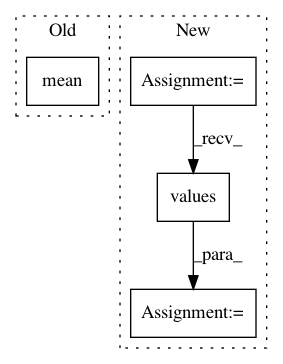

7e3032b51b197e833915bc353e9e063205c0d4f9,snips_nlu/intent_classifier/data_augmentation.py,,get_regularization_factor,#Any#,13
Before Change
def get_regularization_factor(dataset):
intent_list = get_non_empty_intents(dataset)
avg_utterances = np.mean([len(dataset[INTENTS][intent][UTTERANCES]) for
intent in intent_list])
total_utterances = sum(len(dataset[INTENTS][intent][UTTERANCES]) for
intent in intent_list)
alpha = 1.0 / (4 * (total_utterances + 5 * avg_utterances))
return alpha
After Change
def get_regularization_factor(dataset):
intents = dataset[INTENTS]
nb_utterances = [len(intent[UTTERANCES]) for intent in intents.values()]
avg_utterances = np.mean(nb_utterances)
total_utterances = sum(nb_utterances)
alpha = 1.0 / (4 * (total_utterances + 5 * avg_utterances))
return alpha
In pattern: SUPERPATTERN
Frequency: 3
Non-data size: 4
Instances
Project Name: snipsco/snips-nlu
Commit Name: 7e3032b51b197e833915bc353e9e063205c0d4f9
Time: 2017-04-07
Author: adrien.ball@snips.net
File Name: snips_nlu/intent_classifier/data_augmentation.py
Class Name:
Method Name: get_regularization_factor
Project Name: bambinos/bambi
Commit Name: 5bb62768d064583aef9efaf5b0838878e11f71e3
Time: 2016-08-14
Author: tyarkoni@gmail.com
File Name: bambi/models.py
Class Name: RandomTerm
Method Name: _setup
Project Name: NeuroTechX/moabb
Commit Name: 028274e8f52c54b10d632a61ee19a6e64f7a90e6
Time: 2018-02-14
Author: vjayaram@danube.is.localnet
File Name: examples/MotorImagery/two_class_motor_imagery.py
Class Name:
Method Name: